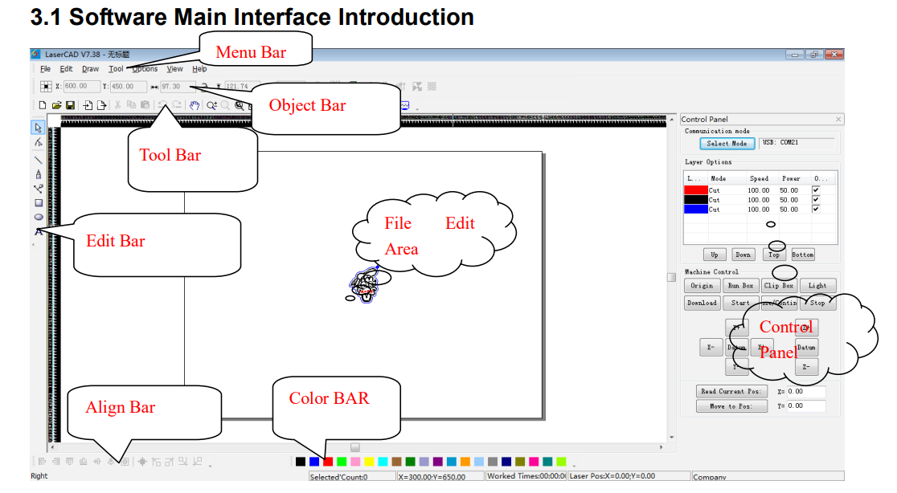

Internship Day 6 Documentation
Day 6 Overview
On Day 6 of the internship, I continued developing my digital fabrication and design skills. I created a custom name stand in Autodesk Fusion, explored LaserCAD software used for laser cutting and engraving workflows, and participated in additional activities related to project documentation and design exploration.
Fusion 360 Name Stand
- Designed a custom 3D name stand using Autodesk Fusion
- Learned sketch-based text modelling workflow
- Explored extrusion and support structure concepts
- Improved CAD modelling accuracy and workflow
Fusion Name Stand Model
Created a personalized 3D printable name stand design using Autodesk Fusion. Practiced text sketching, extrusion operations, and product visualization workflow.

LaserCAD Software Exploration
- Explored the LaserCAD software interface and workspace
- Learned how laser cutting and engraving workflows are managed
- Understood layer settings, speed, and power parameters
- Studied importing vector designs for laser cutting operations
- Explored machine control and job setup procedures
LaserCAD Learning & Practice
Explored the LaserCAD software used for laser cutting and engraving applications. Learned the process of importing vector designs, configuring cutting parameters, managing layers, and preparing jobs for fabrication. This session provided an introduction to digital manufacturing workflows and machine operation concepts.

Extra Activities
- Explored creative product visualization ideas
- Improved technical documentation workflow
- Learned better file organization and project management
- Continued improving GitHub portfolio updates
Learning Outcome
Day 6 improved my understanding of CAD design, digital fabrication, and laser cutting workflows. I learned how design files are prepared for manufacturing processes and gained practical exposure to LaserCAD software used in fabrication labs.